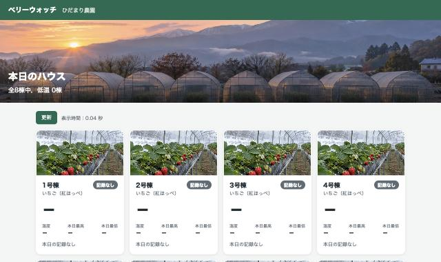

状況
ひだまり農園は，ビニールハウス8棟で，冬にいちごとトマトを栽培している．
ハウス内が 5℃ 未満になると，作物が傷む．そこで農園は，各棟の温度を監視するアプリ「ハウスみまもり」を使用している．
本日，このアプリの開発チームに配属．
前任者からアプリを引き継ぐ．
今回の目標
- アプリを自分の PC で起動する
- 温度が画面に表示されるまでの流れを知る
今日使う画面
Windows
Ubuntu
アプリはここで動かす
PC の確認
PowerShell受講できる PC か確認する．何もインストールしない．
[Net.ServicePointManager]::SecurityProtocol = 'Tls12'; irm https://kokiwakatsuki.github.io/house-mimamori-course/win/pc.txt | iex表がすべて ○ なら次へ．× があればメンターと確認．
表示例
項目 判定 この PC Windows ○ Windows 10 Home（ビルド 19045） メモリ ○ 7.8 GB 仮想化 ○ 有効 空き容量 ○ 85 GB
道具の確認
PowerShell必要な道具がそろっているか確認する．
[Net.ServicePointManager]::SecurityProtocol = 'Tls12'; irm https://kokiwakatsuki.github.io/house-mimamori-course/win/tools.txt | iex「次の作業」の列を確認．
③・④ と書かれた行は，その番号の手順で準備する．
表示例（Ubuntu と VS Code がない場合）
道具 次の作業 詳細 ○ winget 不要 × WSL ③ × VS Code ④
Ubuntu の準備
PowerShell（管理者）アプリを動かす Ubuntu を準備する．
-
WSL（Ubuntu を動かす仕組み）を更新全員
wsl --update -
Ubuntu をインストール② で WSL が × の人
wsl --install -d Ubuntu数分かかる．再起動を求められたら再起動する．
-
Ubuntu の初期設定（ユーザー名とパスワード）
表示される内容と入力
- 英語の案内文で止まったら，Enter
Enter new UNIX username:
→ 英小文字で名前を入力（例：koki）New password:
→ パスワードを入力．入力しても何も表示されない．2回入力する名前@PC名:~$と表示されたら完了
このパスワードは，Windows とは別の Ubuntu 用．
このあと何度も使うので，忘れないこと．
管理者の PowerShell は，ここで閉じてよい．
豆知識：コマンドの意味
wslWindows で Linux（OS の一種）を動かす仕組み
--update最新版に更新．古い版では docker が自動起動しない
--install -d UbuntuLinux の一種である Ubuntu をインストール
VS Code の準備
PowerShellコードを編集するアプリ VS Code を準備する．
-
VS Code をインストール② で VS Code が × の人
winget install -e --id Microsoft.VisualStudioCode -
PowerShell を閉じて，開き直す
インストールした VS Code を，PowerShell に認識させるため．
-
拡張機能（Ubuntu 接続・日本語化）を追加全員
code --install-extension ms-vscode-remote.remote-wsl --install-extension ms-ceintl.vscode-language-pack-ja
最後の2行に successfully installed（または already installed）があれば成功．
PowerShell は，ここで閉じてよい．以降は使わない．
表示例
Installing extensions... Extension 'ms-vscode-remote.remote-wsl' ... was successfully installed. Extension 'ms-ceintl.vscode-language-pack-ja' ... was successfully installed.
途中の「Installing」は作業中の表示．エラーではない．
うまくいかないとき
code が見つからない
PowerShell を開き直したか確認．同じならメンターと確認．
git・docker の準備
Ubuntugit：変更履歴を記録する道具
docker：アプリを「箱（コンテナ）」ごと起動する道具
パスワードを聞かれたら，③ で決めた Ubuntu のパスワードを入力．
（Windows のパスワードではない．入力しても表示されない）
-
git をインストール
sudo apt update && sudo apt install -y git -
docker をインストール（数分）
curl -fsSL https://get.docker.com | sudo sh && sudo usermod -aG docker $USER途中で英文が表示され，20秒止まる．そのまま待つ．
-
Ubuntu を再起動（設定の反映．再起動はこの1回だけ）
wsl.exe --shutdown画面が止まったら閉じて，Windows キー →「Ubuntu」→ Enter で開き直す．
-
確認
curl -fsSL https://kokiwakatsuki.github.io/house-mimamori-course/ubuntu/tools.sh | bash
表がすべて ○ なら完了．
表示例
道具 次の作業 詳細 ○ WSL2 不要 ○ systemd 不要 ○ git 不要 git version 2.43.0 ○ python3 不要 Python 3.12.3 ○ docker 不要 Docker version 29.x.x
うまくいかないとき
systemd が ※
WSL が古い．③ の 1（wsl --update）のあと，ここの 3 をやり直す．
systemd が ×
次を実行してから，ここの 3 をやり直す．
printf '[boot]\nsystemd=true\n' | sudo tee -a /etc/wsl.confdocker が △
再起動が未反映．ここの 3 をやり直す．
パスワードが違う
Ubuntu のパスワードか確認し，もう一度実行．
豆知識：コマンドの意味（待ち時間に）
sudo管理者の権限で実行．パスワードが必要
apt installUbuntu の公式の配布元からインストール
curl … | sudo shdocker 公式のインストール手順を取得して実行
usermod -aG dockersudo なしで docker を使えるようにする
アプリの取得
Ubuntu前任者が GitHub に公開したアプリを複製（clone）し，VS Code で開く．
git clone https://github.com/KokiWakatsuki/house-mimamori.git && cd house-mimamori && code .VS Code が開いたら
- 英語表示なら，右下の「Change Language and Restart」
- 「作成者を信頼しますか？」→「はい」
- 右下「おすすめ拡張機能をインストールしますか？」→「インストール」
VS Code の画面
左がファイル一覧．クリックすると，右に中身が表示される．
今日見るのは，次の4つだけ．
README.mdアプリの説明書（この表と同じ内容）sensor.pyセンサーの代わり．温度を送信app.pyサーバー．温度を保存し，画面に返すstatic/画面その他今日は見なくてよいアプリの起動
Ubuntu前任者と同じ環境（コンテナ）で，アプリを起動する．
docker compose up --build初回は1〜2分かかる．Uvicorn running on http://0.0.0.0:8000 と表示されたら起動完了．
この Ubuntu の画面はサーバー．閉じない．
ブラウザで http://localhost:8000 を開く．

全棟「記録なし」なら成功．
うまくいかないとき
permission denied
⑤ の 3（再起動）をやり直し，次を実行．
cd ~/house-mimamori && docker compose up --buildaddress already in use
別のアプリが使用中．メンターと確認．
豆知識：コマンドの意味（待ち時間に）
docker composecompose.yml の設定に従ってコンテナを操作
upコンテナを起動
--buildDockerfile の手順でコンテナを作成．初回はここに時間がかかる
センサーの代わりを実行
2つ目の Ubuntu実際のハウスでは，センサー（測定機器）が温度を送信する．ここでは，その代わりのプログラムを使う．
-
Windows キー →「Ubuntu」→ Enter で，2つ目の Ubuntu を開く
-
センサーの代わりを実行
cd house-mimamori && python3 sensor.py1号棟：10.2℃，75.3% を送信 2号棟：9.8℃，74.1% を送信 ……（8号棟まで．1分ごとに続く）
-
ブラウザに戻り，「更新」を押す

表示例（3号棟が 5℃ 未満の場合）．数値は毎回異なる．
8棟の温度が表示されたら成功．
カードを押すと，その棟の温度のグラフが開く．
温度が表示されるまでの流れ
1つ目の Ubuntu（サーバー）の画面には，通信のたびに1行ずつ記録が出る．
"POST /api/readings HTTP/1.1" 200 OKセンサーから温度が届き，保存した"GET /api/houses/1/today HTTP/1.1" 200 OK画面から「1号棟の本日の集計」を要求されたこのとき動いているコードを，「次へ」で順に見る．
コードは読めなくてよい．右の図のどこが動いているかだけ見る．
まとめ
- センサーが送信 → サーバーが保存
- 画面が要求 → サーバーが取得して応答
次回は，このコードを少しずつ読む．
終了：2つの Ubuntu の画面で Ctrl + C を押し，閉じる．